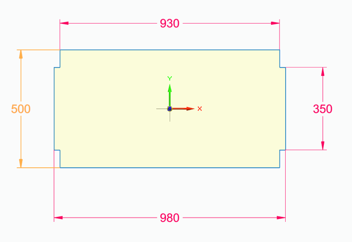

1 · Situation

Selbst angefertigt – Winkelstahl-Rahmen mit eingelegten Holzplatten.
Was man auf dem Foto sieht:
- Selbst angefertigtWinkelstahl-Rahmen mit eingelegten Holzplatten.
- Böden sind glatt und offenTrennstreben lassen sich direkt aufschrauben.
- KellerraumFeuchtigkeit im Blick behalten (passt zum Rostschutz-Thema).
- Zugang von vorneFächer auf verschiedenen Höhen → häufig Genutztes auf Greifhöhe.
2 · Aufgabe
Die Aufgabe in 3 Teilaufgaben:
1 · Boxgröße ermitteln
So wählen, dass möglichst viele Boxen nebeneinander in eine Reihe passen (Breite 930 mm ausnutzen).
2 · Trennsystem planen
Trennstreben aus Kunststoff, mit Spax-Schrauben in den Regalboden geschraubt.
3 · Alles zugänglich machen
Sauber, leicht erreichbar, beschriftet – Grundlage für die 5S-Ordnung.
3 · Regal: 6 Fächer – Maße Regalfach

An allen 4 Ecken sind Ausschnitte für die Regalstützen – deshalb zwei Breiten- und zwei Tiefenmaße.
- Breite innen: 930 mmnutzbar für die Boxenreihe.
- Breite außen: 980 mmPlatte gesamt.
- Tiefe gesamt: 500 mmvorne bis hinten.
- Tiefe innen: 350 mmzwischen den Eckausschnitten.
Für die Planung zählt: nutzbare Fläche je Fach 930 × 500 mm (die volle Breite 980 nur im mittleren Streifen). Bei 6 Fächern ergibt das eine Gesamtfläche von 6 × 0,465 m² = 2,79 m². Wichtig: die 930 mm sind das Maß, auf das die Boxbreite passen muss – das ist Teilaufgabe 1.
4 · Wie viele Boxen passen nebeneinander?
Meine Rechnung – nicht im Original.
| Boxbreite | passen in 930 mm | Rest | Ausnutzung |
|---|---|---|---|
| 100 mm | 9 | 30 mm | 97 % |
| 105 mm | 8 | 90 mm | 90 % |
| 115 mm | 8 | 10 mm | 99 % |
| 120 mm | 7 | 90 mm | 90 % |
| 150 mm | 6 | 30 mm | 97 % |
| 155 mm | 6 | 0 mm | 100 % |
| 186 mm | 5 | 0 mm | 100 % |
| 200 mm | 4 | 130 mm | 86 % |
| 232 mm | 4 | 2 mm | 100 % |
| 300 mm | 3 | 30 mm | 97 % |
| 310 mm | 3 | 0 mm | 100 % |
Grün = fast kein Verschnitt (Rest ≤ 10 mm).
| Boxtiefe | Reihen in 500 mm | Rest |
|---|---|---|
| 500 mm | 1 | 0 mm |
| 350 mm | 1 | 150 mm |
| 250 mm | 2 | 0 mm |
| 235 mm | 2 | 30 mm |
| 165 mm | 3 | 5 mm |
| 160 mm | 3 | 20 mm |
Bei 2 Reihen hintereinander muss die vordere Box herausnehmbar sein, um an die hintere zu kommen.
Was daraus folgt:
- Beste Ausnutzung der Breite155 mm (6 Stück, Rest 0) oder 186 mm (5 Stück, Rest 0) oder 310 mm (3 Stück, Rest 0).
- Meiste Boxen pro Reihe100 mm → 9 Stück, Rest nur 30 mm.
- Tiefe2 Reihen à 250 mm nutzen die 500 mm restlos aus.
- Theoretisches Maximum je Fach9 × 2 = 18 kleine Boxen.
5 · Reicht das Regal für die 135 Boxen?
Abgleich mit Dokument 6.
| Rechnung | Wert | Bemerkung |
|---|---|---|
| Benötigte Boxen (Dok. 6) | 135 | 4 Schraubentypen |
| Fächer im Regal | 6 | laut Aufgabenstellung |
| Boxen pro Fach nötig | 22,5 | 135 ÷ 6 |
| Maximal möglich je Fach (100 × 250 mm) | 18 | 9 nebeneinander × 2 Reihen |
| Fehlend | −27 | 108 Plätze vorhanden, 135 nötig |
Drei Lösungswege:
A · Kleinere Boxen
Bei 3 Reihen à 160 mm Tiefe → 9 × 3 = 27 je Fach = 162 Plätze ✓ (aber hintere Reihe schlechter erreichbar).
B · Sorten zusammenlegen
Selten gebrauchte Längen in eine gemeinsame Box mit Unterteilung.
C · Zweites Regal
Das Foto zeigt bereits zwei Regalsegmente – evtl. sind mehr als 6 Fächer verfügbar.
Abgleich mit Dokument 5
| Maß | Dok. 5 (Annahme) | Dok. 8 (Original) | Abweichung |
|---|---|---|---|
| Breite | 920 mm | 930 mm | +10 mm |
| Tiefe | 480 mm | 500 mm | +20 mm |
| Höhe | 245 mm | nicht angegeben | — |
| Anzahl Fächer | nicht genannt | 6 | jetzt bekannt |
Die Annahme in Dok. 5 war also fast richtig – das 100-mm-Raster von dort passt weiterhin (9 Spalten in 930 mm statt 920 mm).